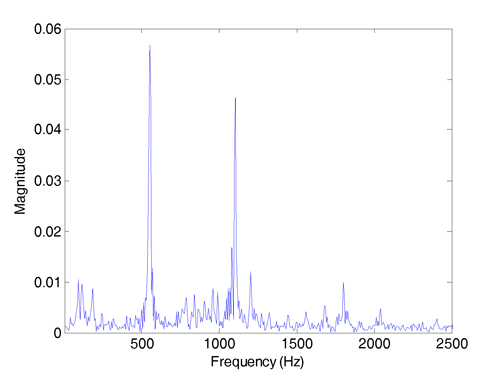

Adaptive Audio-Vibration Rejection
With the ever increasing demand of HDD applications in multimedia
environments, external vibrations generated from sounds and environments are
becoming a dominating source of the position error signal (PES) in various HDD
products. These audio vibrations from, e.g., the computer/TV speakers,
contaminate the HDD servo performance by introducing strong and wide peaks to
the PES spectrum. Such band-limited disturbances (disturbances whose spectrum
are largely contained in multiple narrow or wide bands) differ in products and
can additionally be time dependent. This research aims at designing an
adaptive feedback control algorithm (without using additional sensors) for
audio-vibration compensation.
Adaptive Compensation for Multiple Narrow-Band
Disturbances
Narrow-band disturbances show up as spikes in the PES spectrum (see one
example in Fig. 1). The sources of the narrow-band disturbances in HDD include
track eccentricity (or repeatable runout), disk modes, and external
vibrations. Since the frequencies of the narrow-band disturbances are often
unknown, adaptive control is required for effective rejection of the
disturbances. We have developed indirect and direct adaptive control schemes
to compensate for single and multiple narrow-band disturbances to improve the
servo performance in track following.

Figure 1: A typical frequency spectrum of the Position Error Signal
Advantages of the proposed compensation include:
- it requires the minimal amount of adaptation parameters
- it optimally rejects multiple spectral peaks
- it is a flexible loop-shaping tool that maintain the achieved baseline
servo performance and can reject vibrations much at frequencies higher than
the bandwidth of the servo loop
The deterministic case of the algorithm has also been successfully verified
via experiments on a laboratory setup of an industrial wafer-stage system and
a variable-gear-ratio based electrical power steering system.
Related Publications
- X. Chen and M. Tomizuka, “An Indirect Adaptive Approach to Reject
Multiple Narrow-Band Disturbances in Hard Disk Drives,” in Proceedings of the
2010 IFAC Symposium on Mechatronic Systems, Cambridge, MA, Sept. 13-Sept. 15,
2010, pp. 44-49.
- X. Chen and M. Tomizuka, “Unknown Multiple Narrow-Band Disturbance
Rejection in Hard Disk Drives–an Adaptive Notch Filter and Perfect
Disturbance Observer Approach,” in Proceedings of the 2010 ASME Dynamic
Systems and Control Conference, Cambridge, MA, Sept. 13-Sept. 15, 2010,
Vol.1, pp. 963-970.
- X. Chen and M. Tomizuka, “A Minimum Parameter Adaptive Approach for
Rejecting Multiple Narrow-Band Disturbances With Application to Hard Disk
Drives,” IEEE Transactions on Control Systems Technology, vol. 20, no. 2, pp.
408-415, Mar. 2012.
- X. Chen and M. Tomizuka, “Optimal Plant Shaping for High Bandwidth
Disturbance Rejection in Discrete Disturbance Observers,” in Proceedings of
the 2010 American Control Conference, Baltimore, MD, Jun. 30-Jul. 02, 2010,
pp. 2641-2646.
- X. Chen and M. Tomizuka, “A Structure for all Stabilizing Controllers and
its Applications to Narrow-band Disturbance Rejection in Hard Disk Drives,”
in 21th ASME Annual Conference on Information Storage & Processing
Systems 2011, SE-A5.